Hydrolysis of an Ester in Aqueous Base (Saponification)
The reverse reaction of esterification is the hydrolysis of esters, which may be catalysed both by acids and bases. Acid hydrolysis is the reverse of the Fischer esterification. Base hydrolysis, carried out using hot aqueous base, such as aqueous NaOH, is known as saponification, employed in the manufacture of soaps through hydrolysis of triglyceride ester groups.
Although the carbonyl carbon of an ester is not strongly electrophilic, hydroxide ion is a good nucleophile and adds to the carbonyl carbon to form a tetrahedral carbonyl addition intermediate, which in turn collapses to give a carboxylic acid and an alkoxide ion. The carboxylic acid reacts with the alkoxide ion or other base present to form a carboxylate anion. Thus, each mole of ester hydrolyzed requires one mole of base.
Mechanism
Note that every step in the esterification process is reversible, and the product will most likely be a mixture of carboxylic acid and ester.
Step 1: Make a new bond between a nucleophile and electrophile. Addition of hydroxide ion to the carbonyl carbon of the ester gives a tetrahedral carbonyl addition intermediate.
Step 2: Break a bond to give stable molecules or ions. Collapse of this intermediate gives a carboxylic acid and an alkoxide ion
Step 3: Take a proton away. Proton transfer between the carboxyl group and the alkoxide ion gives the carboxylate anion. This strongly exothermic acid-base reaction drives the whole reaction to completion.
Differenze tra idrolisi acida e basica
There are two major differences between hydrolysis of esters in aqueous acid and aqueous base.
For hydrolysis of an ester in aqueous acid, acid is required in only catalytic amounts. For hydrolysis in aqueous base, base is required in stoichiometric amounts because it is a reactant, not a catalyst.
Hydrolysis of an ester in aqueous acid is reversible, but hydrolysis in aqueous base is irreversible because a carboxylate anion (weakly electrophilic, if at all) is not attacked by ROH (a weak nucleophile).
Other acid derivatives react with base in an identical manner to esters.
Preparazione dei saponi
I saponi naturali vengono comunemente preparati da una miscela di sego e di oli di cocco (entrambi contenenti triacilgliceroli). Questi materiali vengono bolliti con NaOH. Questa reazione corrisponde all’idrolisi basica dei gruppi esterei dei trigliceridi. I saponi che si ottengono contengono principalmente i sali sodici degli acidi palmitico, stearico e oleico provenienti dal sego e quelli degli acidi laurico e miristico provenienti dall’olio di cocco.
After hydrolysis is complete, sodium chloride is added to precipitate the soap as thick curds. The water layer is then drawn off, and glycerol is recovered by vacuum distillation. The crude soap contains sodium chloride, sodium hydroxide, and other impurities. These are removed by boiling the curd in water and reprecipitating with more sodium chloride. After several purifications, the soap can be used without further processing as an inexpensive industrial soap. Other treatments transform the crude soap into pH-controlled cosmetic soaps, medicated soaps, and the like.
Azione pulente dei saponi
Soap owes its remarkable cleansing properties to its ability to act as an emulsifying agent. Because the long hydrocarbon chains of natural soaps are insoluble in water, they tend to cluster in such a way as to minimize their contact with surrounding water molecules. The polar carboxylate groups, on the other hand, tend to remain in contact with the surrounding water molecules. Thus, in water, soap molecules spontaneously cluster into micelles. Most of the things we commonly think of as dirt (such as grease, oil, and fat stains) are nonpolar and insoluble in water. When soap and this type of dirt are mixed together, as in a washing machine, the nonpolar hydrocarbon inner parts of the soap micelles “dissolve” the nonpolar dirt molecules. In effect, new soap micelles are formed, this time with nonpolar dirt molecules in the center.
In this way, nonpolar organic grease, oil, and fat are “dissolved” and washed away in the wash water. Soaps are not without their disadvantages. Foremost among these is the fact that they form insoluble salts when used in water containing Ca(II), Mg(II), or Fe(III) ions (hard water).
Detergenti sintetici
After the cleansing action of soaps was understood, synthetic detergents could be designed. Molecules of a good detergent must have a long hydrocarbon chain, preferably 12 to 20 carbon atoms long, and a polar group at one end of the molecule that does not form insoluble salts with the Ca(II), Mg(II), or Fe(III) ions present in hard water. Chemists recognized that these essential characteristics of a soap could be produced in a molecule containing a sulfate or sulfonate group instead of a carboxylate group. Calcium, magnesium, and iron salts of monoalkyl-sulfuric and sulfonic acids are much more soluble in water than comparable salts of fatty acids.
The most widely used synthetic detergents are the linear alkylbenzenesul-fonates (LAS). One of the most common of these is sodium 4-dodecylbenzene-sulfonate. To prepare this type of detergent, a linear alkylbenzene is treated with sulfuric acid to form an alkylbenzenesulfonic acid. The sulfonic acid is then neutralized with NaOH; the product is mixed with builders and spray-dried to give a smooth-fl owing powder. The most common builder is sodium silicate.
| Dodecylbenzene | 1. H2SO4 ⟶ 2. NaOH | CH3(CH2)10−Ph−SO3−Na+ Sodium 4-dodecylbenzensulfonate (an anionic detergente) |
Alkylbenzenesulfonate detergents were introduced in the late 1950s, and today they command close to 90% of the market once held by natural soaps. Among the most common additives to detergent preparations are foam stabilizers, bleaches, and optical brighteners. A foam stabilizer frequently added to liquid soaps but not laundry detergents (for obvious reasons: think of a top-loading washing machine with foam spewing out the lid!) is the amide prepared from dodecanoic acid (lauric acid) and 2-aminoethanol (ethanolamine). The most common bleach is sodium perborate tetrahydrate, which decomposes at temperatures above 50°C to give hydrogen peroxide, the actual bleaching agent.
O=B−O−O−Na+ ⋅ 4H2O
Sodium perborate tetrahydrate
(a bleach)
(a foam stabilizer)
Also added to laundry detergents are optical brighteners, known also as optical bleaches. They are absorbed into fabrics and, after absorbing ambient light, fluoresce with a blue color, offsetting the yellow color caused by fabric aging. Quite literally, these optical brighteners produce a “whiter-than-white” appearance. You most certainly have observed the effects of optical brighteners if you have seen the surprisingly intense blue glow of “white” shirts or blouses when exposed to black light (UV radiation).